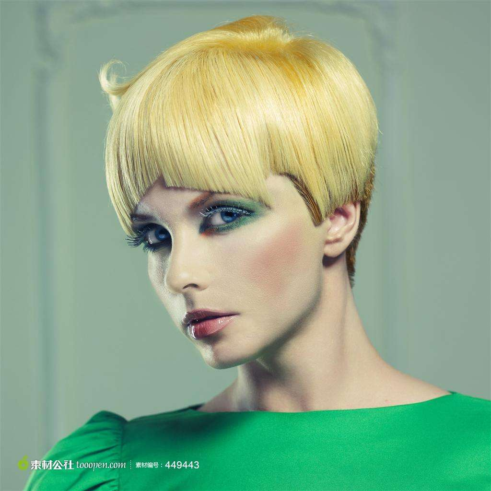
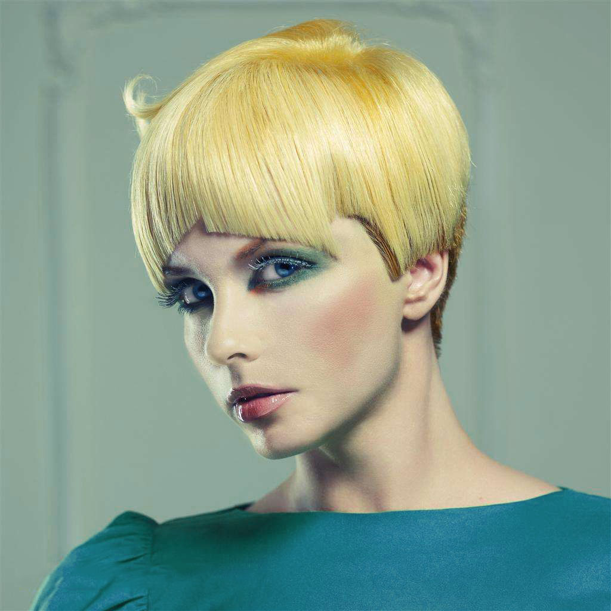
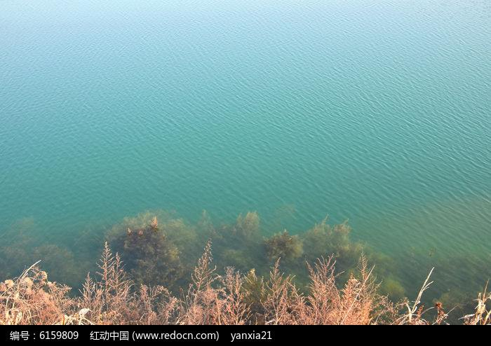
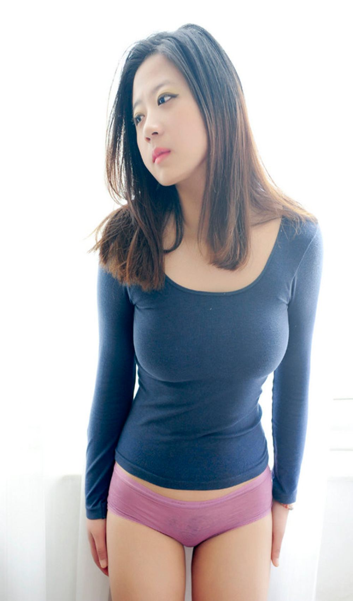
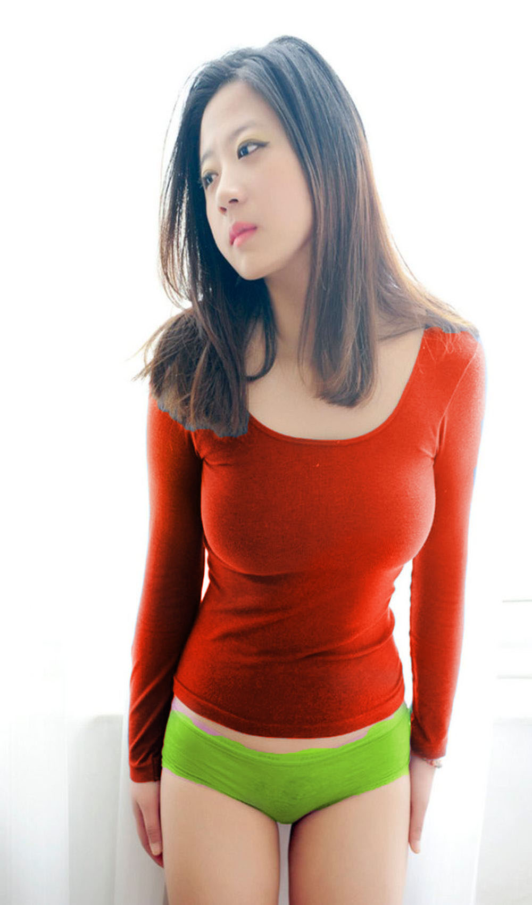
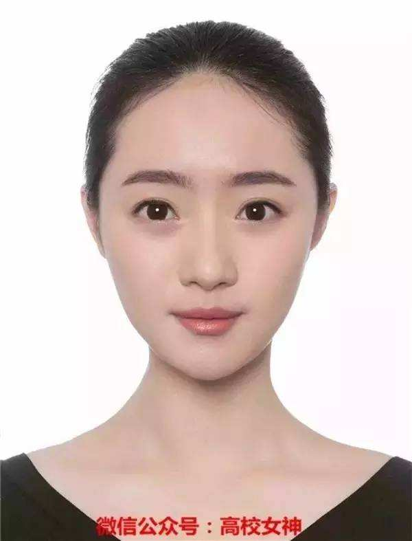
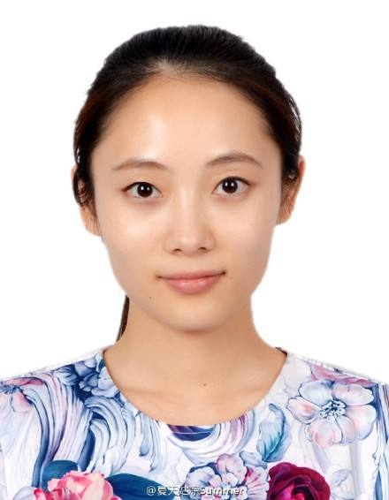
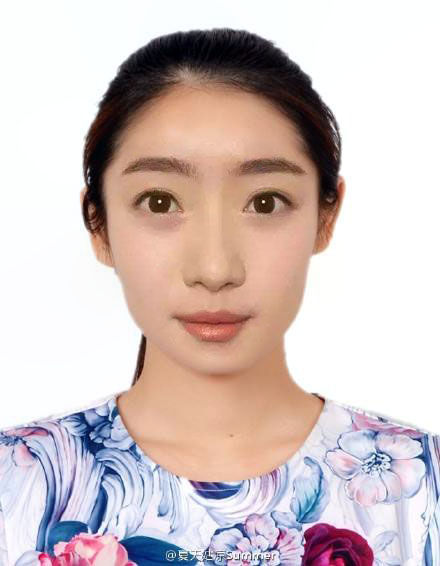

改变物体颜色

1.选择->色彩范围->可以直接选择(红蓝黄绿青洋红)/也可以取色选择
2.右击右下角xx->选择色相/饱和度->调整色相及其他即可调整颜色

改变物体透明
1.左侧魔棒工具->选择->反选->在该图片上右击->通过拷贝的图层
2.将右边背景图层删除->此时图片透明

去掉多余内容

1.左侧矩形选择工具->选中图中想要去掉的内容
2.编辑->填充->内容识别->点击确定即可完成
改变衣服颜色

1.左侧快速选择工具->选择你想要改变颜色的区域(alt辅助鼠标可修改选择区域)
2.选择好区域后左侧画笔工具->大小80/模式颜色/不透明50->在选中区域涂抹即可

换脸
 
1.左侧套索工具勾画脸部轮廓->复制,粘贴到另外一张图片上->ctrl+T调整大小,双击确定->ctrl+鼠标点击刚才勾画的脸部轮廓图层
2.选择/修改/收缩9像素->点击下面图片delete删除选区内容->选中两个图层->编辑/自动混合图层/全景图(下面两个勾选)->确定即可完成
